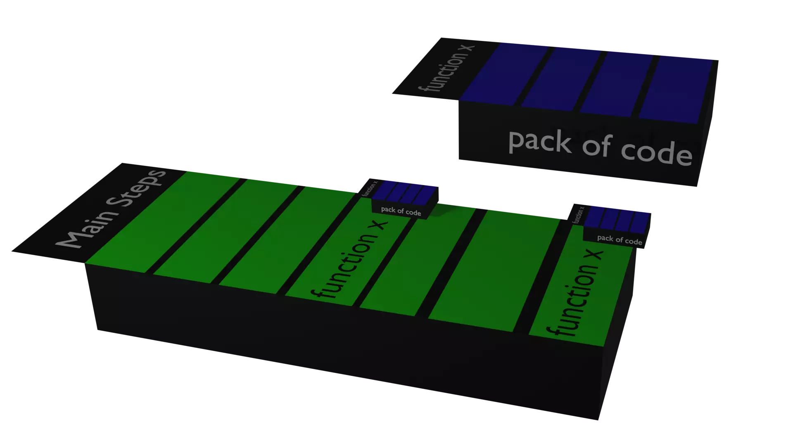

What is the program and why....?
Computers have amazing memory & speed but it can't do the work which
I want if I don't Express the work to it. so, to utilise the
computer speed we must know how to interact with a computer The
language in which the understanding between you and computer is
taken place is called programming language and there are many
programming languages few popular are Python, C++,Java etc.
Programming language is just a tool.
Simple C code
The sample code of c language looks like this
How Programming Works
Programming syncs with humans in following ways.
Data Types
lets look into first one ie. Storing data in a classified way.
What comes to mind by observing below rows....
Similarly ,there are few inbuilt classification(Data Types) in c
as
int Score = 777;
char Grade="A";
char Team[20]="Expand Skills" //[20] is the limit of chars
float numfloat= 4.21 // 7 decimal digit precision
double numdouble= 2.398347342 // 15 decimal digit precision
Array
Array is a collection of same type of data items stored in a
continuous memory allocations and the data in it are called
elements. the position index is used as its identifier in array
One-dimensional Array
It's simple collection of data types...
Two-dimensional Array
It's collection of 1d array ...
Three-dimensional Array
It's collection of 2d array ...
main purpose of array is TO STORE DATA IN A ORGANIZED FORMAT
EX.. Look at pic below.... It's 2 d array......of pixels........
Where, each pixel is 1d array of int datatypes.... So it's all 3d
int datatypes And the array is below....
3d array
above Pic is expressed In basic datatypes... Similarly...... audio,
video and other formats....can be expressed as basic datatypes using
multi dimensional arrays
Identifiers
A C identifier is a name used to identify a variable, function, or
any other user-defined item.
Tokens
Tokens are the individual smallest building blocks of code which
compiler is about to decode into machine code
In c code statement below,
tokens can be identifiers ,special characters,keywords,constants or
a string literal.
Comments
Functions

Functions are a group of lines which will process code and every c
program musst have atleast one function cause its where the
execution of any task is done
function_name is the identifier
Add(5, 7)
we assigned to add two numbers and print .it will give output
Understanding Printf Function
#include <stdio.h>
int main()
{
char ch = 'A';
char str[30] = "Expand Skills";
float flt = 10.234;
int no = 150;
double dbl =20. 123456 ;
printf("Character is %c \n", ch);
printf("String is %s \n" , str);
printf("Float value is %f \n", flt);
printf("Integer value is %d\n" , no);
printf("Double value is %lf \n", dbl);
return 0;
}
Understanding scanf Function
Now let's See how to give info from console screen
Function scanf() is used For it................
SAMPLE INTERACTIVE TRAVELLING BOT CODE
And now give the system an interactive Conversation between u and
computer...
Its just dealing with info with computer
Applying logic condition
For example... There is a sport men
If it's raining he will not go to ground If not then he will go to
ground with his kit.
Human have a set of instructions depending On condition in many
aspect
We can make similar type of condition Using programming language In
the previous interactive code we can make it to not respond politely
to targeted persons and do things differently......
for the previous code.....we can stop a person in traveling by
checking name .....example say we want to point out birladen we can
do it using if else condition.
If condition
if condition controls conditional branching ie. it checks the
conditional parameter ,and allows the branch to
execute if conditional parameter equals to 1(true),if 0(false) it
skips the branch
If Else
If else condition controls conditional branching i.e. it checks
the conditional parameter ,and allows the branch to execute 2 ways
one way if conditional parameter equals to 1(true) ,another way if
conditional parameter equals to 0(false)
Else-if statement
else if statement is similar to if statement which is executed when
the if statement before it is false.....
Pointing birladen out in names
#include <stdio.h>
#include <String.h>
int main()
{
printf("......TRAVELERS INFO.....\n ");
char name[20],dest[30];
int age;
printf("Enter Your Name....");
scanf("%s", &name);
int c=strcmp(name,"birladen");//function imported from string.h
if (c!=0){
printf("hi %s ,Enter your age....",name);
scanf("%d", &age);
printf("Enter Your destination..... ");
scanf("%s", &dest);
printf("thanks for cooperation %s,/n happy journey to %s",name,dest);
}
else{
printf("you are not allowed and u are under suspect..... ");
}
return 0;
}
While
While condition will loop the same condition multiple times by
checking the condition after every loop
PRINTING PRIME NO. CODE
#include <stdio.h>
int main(){
int num,i,count,n;
printf("Enter max range: ");
scanf("%d",&n);
for(num = 1;num<=n;num++){
count = 0;
for(i=2;i<=num/2;i++){
if(num%i==0){
count++;
break;
}
}
if(count==0 && num!= 1)
printf("%d ",num);
}
return 0;
}
Switch
it is simiar to else if statement it executes multiple tasks for
multiple values of parameter variable
Pointers
Pointers are the variables which store The address of other
variables
Struct
Structure in c is a user-defined data type that enables us to store
the collection of different data types